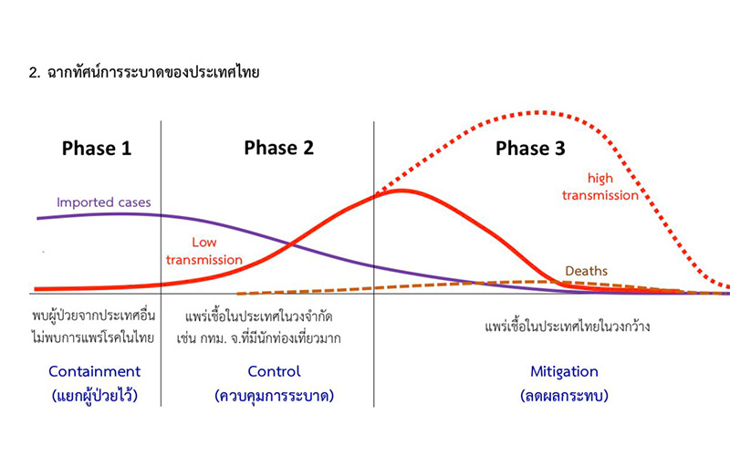
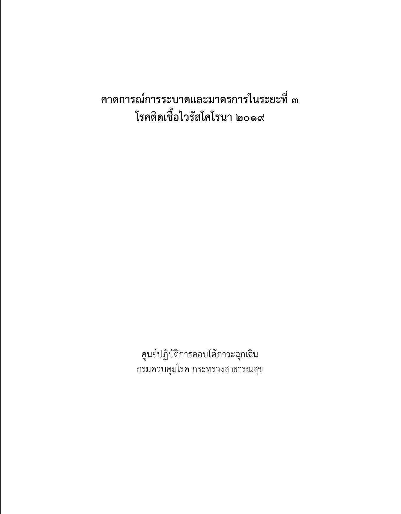
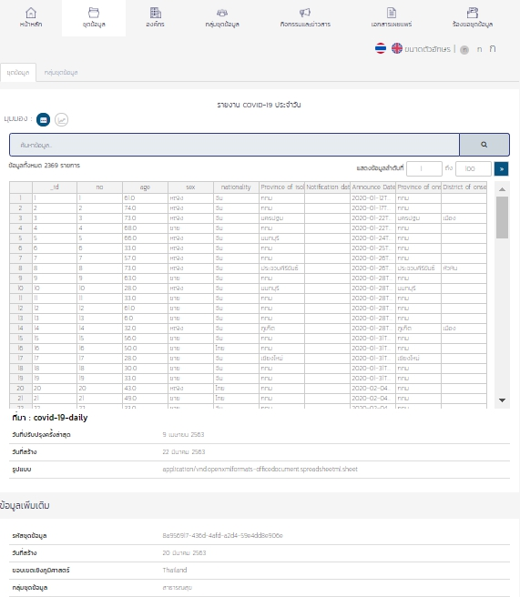
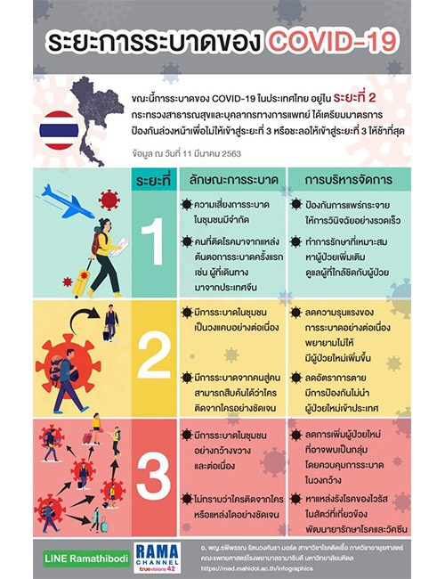

ตรวจสอบระยะ Covid-19
 (1).png)
STATE
ACCEPT !
ระยะที่ 0 ไม่พบผู้ป่วยและการแพร่โรคในประเทศไทย
Input ที่จะไม่ทำให้เข้าสู่ Trap state:
Detect = พบผู้ป่วยรายใหม่
ACCEPT !
ระยะที่ 0 ไม่พบผู้ป่วยและการแพร่โรคในประเทศไทย
Input ที่จะไม่ทำให้เข้าสู่ Trap state:
Detect = พบผู้ป่วยรายใหม่
REFERENCE
|  | " ระยะที่ 2 มีการระบาดในชุมชนเป็นวงแคบ และการระบาดนั้นสามารถสืบค้นได้ว่าใครติดจากใครอย่างชัดเจน ส่วนระยะที่ 3 คือการระบาดในชุมชนอย่างกว้างขวางและต่อเนื่อง โดยไม่ทราบว่าใครติดจากใครหรือแหล่งใดอย่างชัดเจน " |
|  |  |  |
|
|
|
|